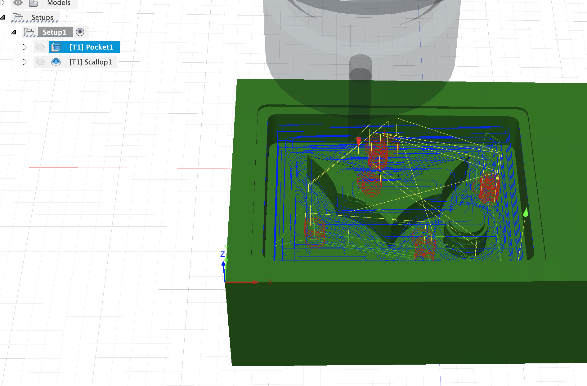

Week 11
Mold making and Casting
In this week's assignment, the requirement is to design and mill a mold and then cast it to create a 3D object. I have never madde a mold but the process is oddly simila to playing with sand.
Individual Assignment:
- Design a 3D mould around the stock and tooling that you’ll be using, machine it, and use it to cast parts from it.
Group Assignment:
- Review the safety data sheets for each of your molding and casting materials, then make and compare test casts with each of them.
Individual Project
For my individual assignment, I decided to create a mold in the shape of the batman logo. For this I have used machinable wax. One of the reasons why I chose to use machinable wax is because I am trying to make only a small mold hence I have really small details which can only be done in a precision mill. Thus this creates the problem of only being able to use really small endmills.
What is molding?
Molding is the process of manufacturing by shaping liquid or pliable raw material using a rigid frame called a mold or matrix.
Molds are negative forms that are used to shape casting materials, creating duplicates of the model that mold was made from. The resulting cast will be an exact likeness of the shape of the hollow mold form.
Materials used for Molds
- Machinable Wax
- Liquid latex
- Wood
- Silicone
- Alginates
- Gypsum plasters
Types of molding?
- open face.
- close box.
- complex shapes.
What is Casting?
Casting is the act of pouring liquid material into the cavity of a mold. It is a positive shape complementary to the mold, and it is the final result of the process.
Materials used for casting
- Gypsum
- Concrete
- Plaster
- Resin
- Epox
- Wax
- Metal
Applications of casting?
- Prototyping
- Dental
- Jewelry Manufacturing
- Cosplay
- Manufacture of turbines and pump impellers
- Candle Making
- Food industry
Individual Project
I decided to make the batman logo.

As first step I checked the dimentions of the Wax and recreated it on Fusion360. Because it was just a rectangle, it was really easy to recreate. I used the an svg file (

I went to the manufacture tab and used 2 diffrerent types of cuts to get machining instructions for the roland. As I earlier mentioned, I cannot use the Axiom CNC mill because my object is really small and detailed, hence, I need to use the Roland SRM-20 Precision mill. However, using endmills that are 1/32" in size would take hours to mill just that area. Fortunately we have a 6mm flat endmill and a 6mm collet. Hence I have created two different toolpaths one for 6mm and one for 1.2mm flat endmills.


After both the cuts were done I got this:


Now that I finished the Wax mold I can use it to create the inverted mold. For this I have used blue resin and put it in a Vacuum chamber.


The reason I put it in a vaccum chamber is so that there are no bubbles at the end. After vaccuminng it for 40 seconds i left it out to dry and then waited for 24 hours before i could cast something in it. We had numerous casting materials but i chose a really quick hardening one that took around 5 minutes to solidify. This was the 300Q. It had a 90:100 ratio mix by total weight so I had to do some quick maths onnly to realise that the weighing scale was not advance enough for decimal laces so it ended up being a 1:1 ratio.


As you can see I hadd to cover the surface of the mold with the casting liquid since I forgot to mill the backboard of my design, So i just poured some over it and let it dry. This is what the final piece looked like:

Group Project
For the group assignment we recorded the specs for each of the listed boards.

For the group prject we Review the safety data sheets for each of your molding and casting materials, then made and compared test casts with each of them. Here is a link to our data sheet (link)

For our groups test mold, we used an existing wax mold to model the Wheaton Logo using Flex Foam-iT III. it has a 35-second Pot Life, 25-minute Handling Time, and 57.5A:100B by Weight Ratio

Pot Life means that we had 35 seconds to mix the correct ratio and pour.
The Handling Time means that after 25-minutes, we could handle the final result.
The Weight Ratio means that the ratio of substance A to substance B had to be equivalent to 57.5:100.
Using the Flex-foam-it we found the mold had an issue sticking to the material and it also expanded a lot larger than expected. We also realised that groves are a nessesity with the amount of expantion of the foam. So in order to keep andd maintain rigidity for the cast we covered it with a red plastic square which had a hole cut out from which excess material could pour out.